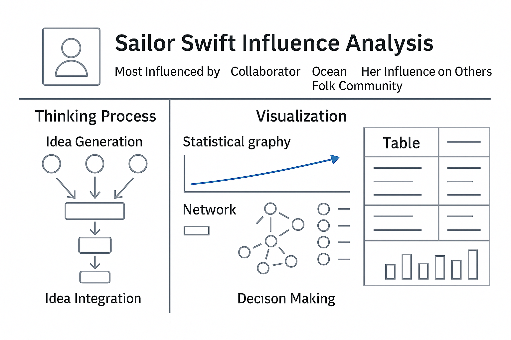
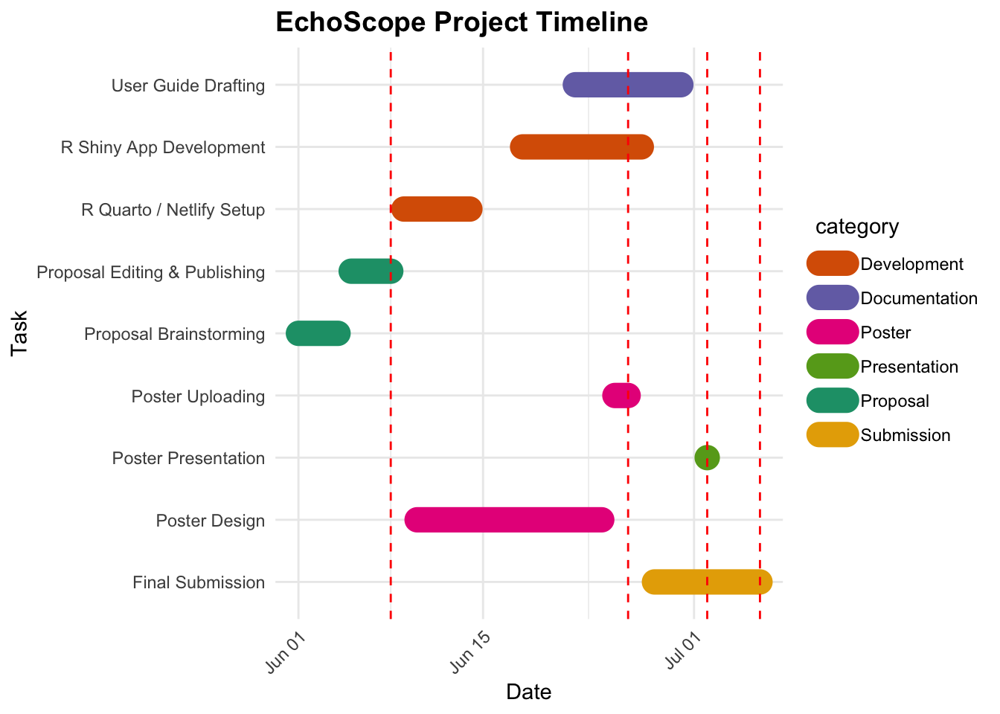

EchoScope™: Leveraging Visual Analytics & Graph Intelligence to Explore Music Influence with Sailor Shift
1. Project Title
EchoScope™ — A Visual Analytics Prototype for Music Influence Exploration
2. Short Description
• Problem
The music industry lacks intuitive tools to visually trace influence, discover emerging talents, and understand genre diffusion. Existing dashboards are often statistical, but not exploratory or network-driven.
• Proposal
Using Mini-Challenge 1 (VAST 2025) data, we propose EchoScope — a visual analytics tool to explore Sailor Shift’s influence and the rise of Oceanus Folk through interactive visualizations built with Shiny and network graphs.
📂 Case Data Sample
To build this system, we analyzed:
- 17,000+ nodes representing artists, genres, producers, and songs
- 37,000+ edges including collaboration, stylistic influence, production, and genre classification
- Key fields:
notoriety_date,notable,InStyleOf,PerformerOf,genre
3. Motivation: Product Positioning
EchoScope™ is a conceptual SaaS-like platform that combines:
- Music knowledge graphs
- Genre diffusion analysis
- Artist influence scoring
It is designed to simulate a data product that helps:
- 🎧 Music platforms discover new talents
- 🏷️ Labels map influence networks
- 📊 Brands and analysts follow genre evolution
🎯 Vision: Use visual analytics + graph intelligence to discover the next “Sailor Shift.”
4. Problem Statement
We treat Mini-Challenge 1 as a real-world business question:
How can we analyze the career of Sailor Shift and uncover the influence of Oceanus Folk?
EchoScope addresses this through exploratory visual analytics features.
5. Project Overview
🧩 1. Product Modules
| Module Name | Functionality | Business Value |
|---|---|---|
| 🎼 Influence Graph Studio | Builds 1–3 hop influence network from Sailor and others | Understand artist leverage and collaboration value |
| 🔥 Genre Diffusion Tracker | Tracks Oceanus Folk’s stylistic evolution and diffusion | Reveal cultural trends and genre crossovers |
| 🚀 Talent Score Engine | Predicts future breakout artists using graph and song metrics | Helps in signing, scouting, and artist incubation |
| 📊 Trend Analytics Dashboard | Generates interactive genre/artist/time reports | Assists marketing, content, and PR strategies |
🔭 2. Use Cases
| Scenario | Role | Interaction Description |
|---|---|---|
| Talent Scouting | A&R Manager | Input genre → Get Top 10 rising stars with influence score |
| Campaign Planning | Marketing | Filter by region + trend → Identify target collaborations |
| Brand Matching | Brand Lead | Use graph to explore matching artist style |
| Catalog Curation | Music Editor | Track genre evolution to curate songs accordingly |
📆 3. Development Timeline (Simulated)
| Quarter | Goal |
|---|---|
| Q1 | Build V1 prototype (Oceanus Folk + Sailor graph) |
| Q2 | Add scoring model and timeline charts |
| Q3 | Expand genres and add user customization options |
| Q4 | Demo full use case with Shiny + deployment-ready site |
🧠 4. Team Capacity (for academic framing)
- Data Analytics: Graph modeling, centrality, genre signal detection
- Shiny Prototyping: Frontend layout, visual rendering, interactivity
EchoScope is not just a course project — it simulates how visual analytics can empower cultural discovery.
6. Website Prototype Design
💡 Functional Tabs
- Home – Project description, Sailor Shift bio, goal overview
- Influence Graph – Dynamic visNetwork with adjustable depth, filters by genre/year
- Genre Diffusion – Interactive timeline and genre flow chart
- Talent Radar – Artist radar chart based on scoring algorithm, download option
- About – Team roles, methodology, and reflection
📊 Input & Output Mapping
| Input Controls | Output Visualizations |
|---|---|
| Select Artist / Node | Interactive network (1–3 hop ego graph) |
| Choose Time Range | Timeline chart, genre progression map |
| Filter by Genre / Notability | Talent radar score & filtered influence list |
| Download Panel | Export PNG/PDF/CSV from each module |
🧩 Module UI Prototypes
🎼Influence Graph Studio

🎨 Genre Diffusion Tracker
Project Schedule
Below is an overview of our project timeline.
Code
library(tidyverse)
library(lubridate)
# 任务排期
schedule_df <- tibble(
task = c(
"Proposal Brainstorming", "Proposal Editing & Publishing",
"R Quarto / Netlify Setup", "R Shiny App Development",
"User Guide Drafting", "Poster Design", "Poster Uploading",
"Poster Presentation", "Final Submission"
),
start = as.Date(c(
"2025-06-01", "2025-06-05", "2025-06-09", "2025-06-18",
"2025-06-22", "2025-06-10", "2025-06-25", "2025-07-02", "2025-06-28"
)),
end = as.Date(c(
"2025-06-04", "2025-06-08", "2025-06-14", "2025-06-27",
"2025-06-30", "2025-06-24", "2025-06-26", "2025-07-02", "2025-07-06"
)),
category = c(
"Proposal", "Proposal", "Development", "Development",
"Documentation", "Poster", "Poster", "Presentation", "Submission"
)
)
# 关键日期
due_dates <- tibble(
label = c("Due 8 Jun", "Due 26 Jun", "Due 2 Jul", "Due 6 Jul"),
date = as.Date(c("2025-06-08", "2025-06-26", "2025-07-02", "2025-07-06"))
)
# 日期标注额外字段（展示完整日期）
due_dates <- due_dates %>%
mutate(date_str = format(date, "%b %d"))
# 颜色
colors <- c(
"Proposal" = "#1b9e77", "Development" = "#d95f02", "Documentation" = "#7570b3",
"Poster" = "#e7298a", "Presentation" = "#66a61e", "Submission" = "#e6ab02"
)
max_y <- length(unique(schedule_df$task)) + 1
# 绘图
ggplot(schedule_df, aes(x = start, xend = end, y = task, yend = task, color = category)) +
geom_segment(size = 6, lineend = "round") +
geom_vline(data = due_dates, aes(xintercept = date), color = "red", linetype = "dashed") +
geom_text(
data = due_dates,
mapping = aes(x = date, label = paste(label, "\n", date_str)),
y = max_y,
inherit.aes = FALSE,
color = "red", size = 3.5, vjust = 0
) +
scale_color_manual(values = colors) +
labs(title = "EchoScope Project Timeline", x = "Date", y = "Task") +
theme_minimal() +
theme(
axis.text.x = element_text(angle = 45, hjust = 1),
legend.position = "right",
plot.title = element_text(size = 14, face = "bold")
)